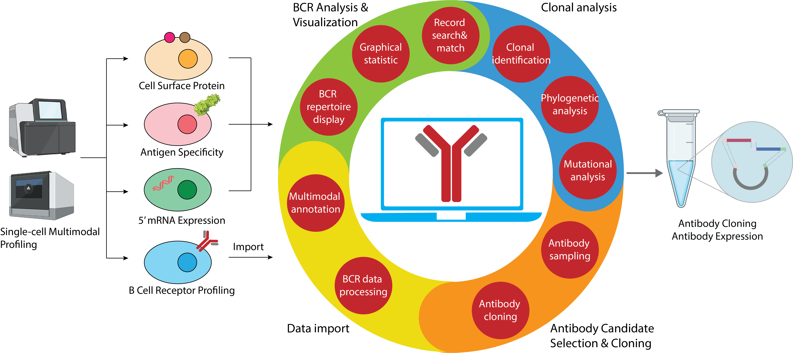
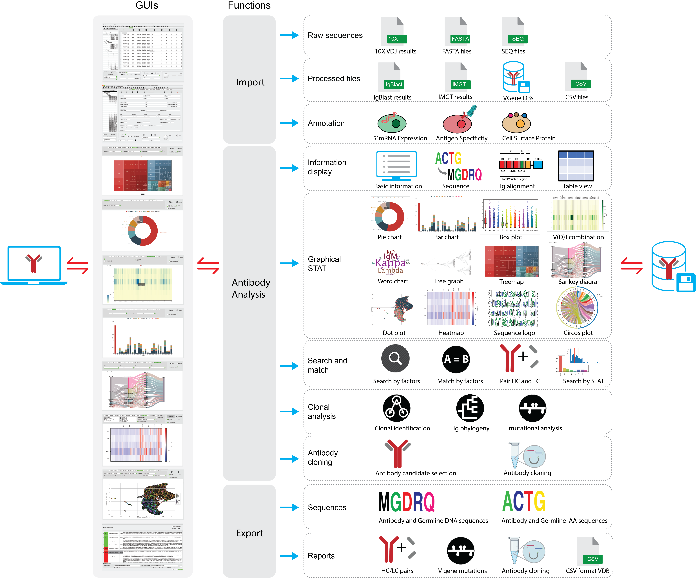

VGenes, an integrated graphical tool for efficient, comprehensive and multimodal analyses of massive B-cell repertoire sequences
Diversities of B cell receptor (BCR) Genes bring about the production of antigen-specific antibodies for a variety of antigens, laying the foundation of adaptive immunity. Single cell sequencing advances have enabled large-scale BCR gene profiling under single cell resolution and simultaneous investigation of BCR sequencing alongside single cell genotype and phenotypes, allowing efficient screening of antibodies and in-depth study of immune mechanism. However, rapid growing of both depth and width of BCR sequencing data proposed challenges to data process and interpretation. Here, we propose VGenes, a graphical and integrative tool for BCR analysis, enabling multimodal analysis of BCR genes along with their genotype/phenotype profiling (e.g. transcriptome expression, surface protein expression, antigen probe binding, and etc.). VGenes seamlessly connects BCR sequences with antibody cloning and characterization, integrates graphical statistical analysis, clonal analysis, Ig phenology analysis, mutation analysis, aiming to help users to select antibody candidates from massive B cells efficiently. We demonstrated the efficient selection of Spike-specific antibody candidates from a massive B cell dataset of COVID-19 infected subjects using VGenes.
Updates
Jan,20,2022 VGenes-v1.0.0-beta version is released. See here for details.
Nov,10,2021 VGenes-v1.0.0-alpha version is released. See here for details.
Github Page
VGenes is developed using Python 3. All the source code are available on Github PageSystem structure of Librator
VGenes seamlessly connects BCR sequences with experimental characterization, helps immunologists to investigate BCR diversities and locate antigen-specific candidates from a massive B cell population. All the human-computer interactions of VGenes, for example, information display, function activation and user input/output, are completed through its graphical user interfaces (GUI), which highly reduces the learning cost to immunologists and is user-friendly. Based on the GUI, VGenes implemented a comprehensive collection of BCR-specific-functions, for example, single cell BCR annotation, graphical statistic of B cell population, matching of heavy and light chains, mutational, clonal and phylogenic analysis of BCR genes, and antibody cloning, aiming to help immunologists making biological conclusions and decisions more efficiently. Furthermore, VGenes accepts multiple input formats, allowing wider range of data resources and enabling better compatibility with existing BCR tools and datasets. We tested VGenes in our lab and believe it will be helpful for the B cell research community.
